SASS is a preprocessor for CSS, which means it extends the capabilities of CSS by providing additional features like variables, nesting of selectors, and functions. It allows us to write more efficient and maintainable CSS code by enabling us to reuse code and write styles in a more organized and structured way.
SASS is not a framework or a library like Bootstrap, which provide pre-written code to help speed up development. Rather, SASS is a tool that helps us improve our workflow and makes it easier to manage complex projects. It allows us to write CSS code in a way that is more modular and scalable, which is especially useful when working with large projects that require a lot of styling.
One of the key features of SASS is its support for nesting of selectors. This means we can write CSS rules that are nested inside other rules, making our code easier to read and understand. SASS also supports functions, which allow us to define reusable pieces of code that can be used throughout our stylesheet.
The benefits of using SASS are numerous. It can help us write cleaner and more efficient CSS code, which in turn makes it easier to maintain and update our projects. It also allows us to organize our styles into separate files, which makes it easier to manage large projects. Overall, SASS is a valuable tool for developers who want to write better CSS code and improve their workflow.
SASS uses a file format that is not recognized by web browsers, so we need to compile it to standard CSS code. The compilation process involves using a SASS compiler to convert the SCSS syntax into CSS. This extra step provides benefits like reducing the amount of code we need to write and making it easier to organize our styles for larger projects.
How to install:
Considerations
We will have to install SASS using NPM (Node Package Manager). Throughout the project, we will work with code packages. NPM is a library from which we can download these external packages and use their tools. It can also track which packages we use. Sass is one of these tools, as well as Bootstrap. To download these code packages, we must enter different series of commands in the terminal. Where can we find these commands? On the official NPM website.
Node js
What do we mean when we talk about Node.js?
Basically, it is a runtime environment for JavaScript that allows us to execute its code on the server side. NPM (Node Package Manager) is included within its installation. Node.js has a vast library of modules available through NPM, enabling powerful server-side functionality and streamlining package management.
How do we incorporate sass in our project?
After installing Node.js, we will open the console in Visual Studio Code and type the following code: "npm install -g sass". (The "g" means it will be a global installation). It is installed once and the process will not have to be repeated again.
When you are working on a project and you decide to convert CSS styles to Sass, it is important to keep in mind that Sass is a CSS preprocessor, which means that the Sass code needs to be compiled into a valid CSS file that can be interpreted by the web browser.
During the conversion, the Sass file will overwrite the existing CSS file, which means that if you make a mistake or are not satisfied with the results, you will lose all the changes made to the original CSS file.
To avoid this problem, it is a good practice to make a copy of the original CSS file before starting to work with Sass. This way, you will have a backup copy in case something goes wrong during the conversion process.
Once you have made a backup of the CSS file, you can start working on the Sass file and compile it to produce a new and improved CSS file.
We have two types of files available for writing the sass code. On one side SCSS and on the other SASS. For those who are new to Sass, it is recommended to use the SCSS syntax as it closely resembles the way CSS code is written, including the use of semicolons and braces. This can help make the transition from CSS to Sass much smoother and easier to understand.
Now, what we need to do is create a folder called "scss" and then add a file called "main.scss" to it, which is the main sass file. This file will serve as the entry point for compiling SASS into CSS.
To compile our SCSS code into CSS, we need to initialize Sass by executing a command in the console that takes into account our current location. This location is highlighted in yellow on the console. Next, we need to link the SCSS file to the CSS file by running the command "sass --watch scss/main.scss css/styles.css". This tells Sass to continually monitor any changes to our code and compile them into CSS automatically. By doing this, we can work more efficiently and see our changes reflected in the final product in real-time.
We have a tool in the terminal which allows us to have multiple terminals. This is very useful to simultaneously use the git terminal. We can also change the names of the terminals
Selector nesting
We should consistently produce code that is optimized for readability, comprehension, and efficient resource utilization. Selector nesting is a feature in SASS that allows developers to write nested selectors for better organization and specificity in CSS, reducing code repetition and increasing maintainability.
Ampersand "&"
This selector calls the parent container and it also needs to be inside of it. It works pretty well if we combine it with the BEM methodology. It can optimize our code if we use it like this
Variable
A variable in programming is a storage unit for data that can be altered during program execution. It helps in storing both temporary and permanent values. For instance, in web development, variables can be used to hold color values, which can then be easily used across different sections of a website. If a client requests a color change, it's much simpler to modify the value of the variable than to manually change each instance of the color in the code. This approach speeds up customization and makes the process more efficient. Inside the variables we can store: Colors, typography, numbers.
Other types of variables could be:
Partials
In Sass, partials are files that start with an underscore "_" character and are used to store reusable chunks of code that can be imported into other Sass files.
Partial files are not compiled into standalone CSS files on their own, but rather they are meant to be imported into other Sass files using the @import directive. When a Sass file is imported, Sass checks to see if the file name starts with an underscore, and if it does, it assumes that the file is a partial and will not generate a CSS file for it.
Using partials in Sass can help modularize and organize your code, making it easier to maintain and update. It also helps reduce duplication of code across multiple files, by allowing you to import the same partial file into multiple Sass files.
Extends
What can we do with them? They can extend the styles that a class has to another one. Also, Sass recognizes the BEM methodology and help developers to write more organized, modular, and scalable CSS code.
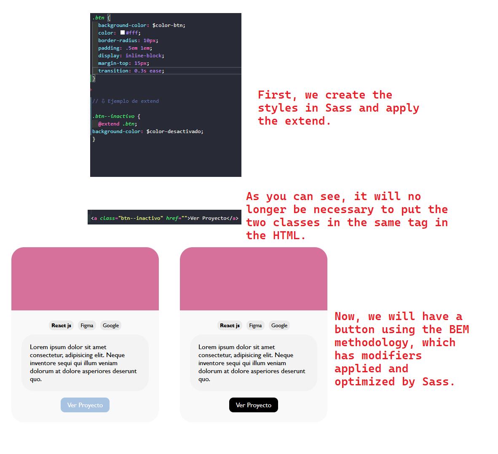
Mixins
This rule only exists in Sass, it does not exist in CSS. Thanks to mixins, in the future we can have a stylesheet with all the predefined styles that we want, making it easier to tackle and execute a new project more efficiently. We can reutilize mixins
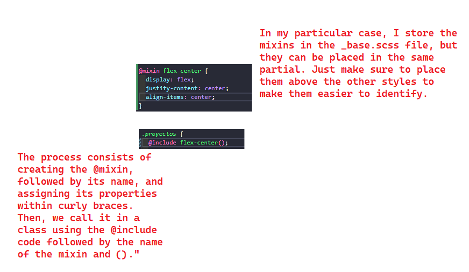
Mixins using Arguments
We will use the structure of a function (tipically used in the world of programming). If we use mixins in this way, we can have parameters that can be customizable. It's like if we were using variables. The 'variables' we create in a mixin with arguments are ONLY used in the context of that mixin.
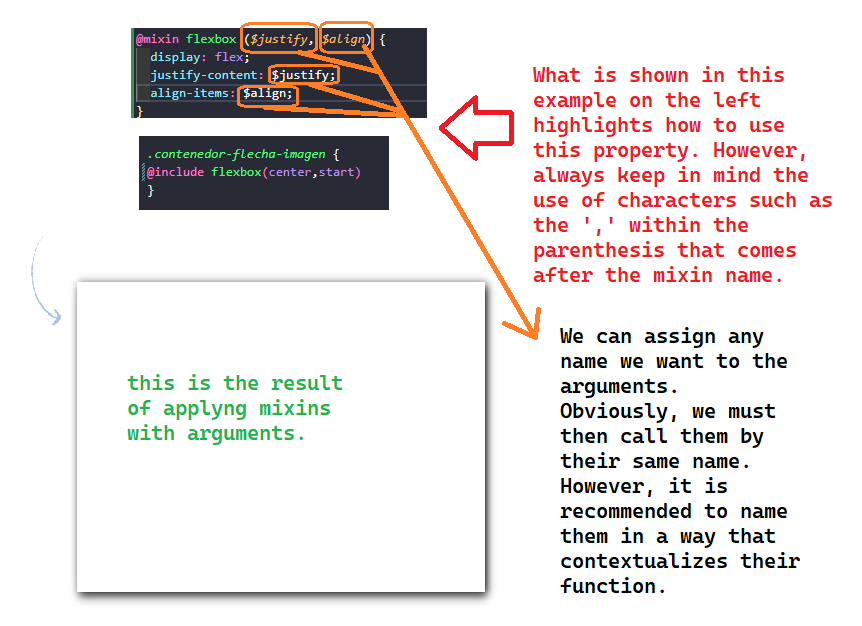
We can use more than 2 arguments in our mixing, like this:
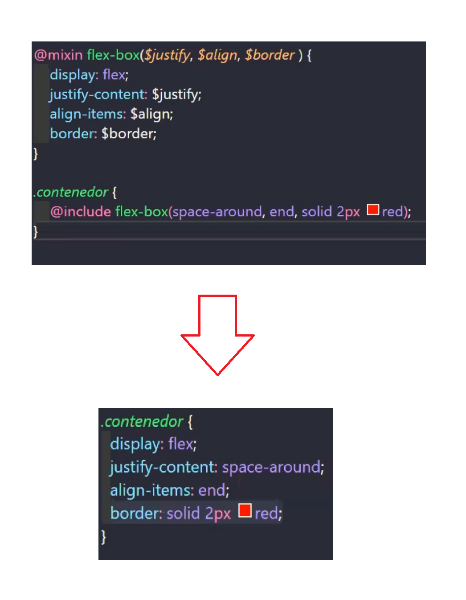
We can also set default values in case we don't fill in any values for the arguments.
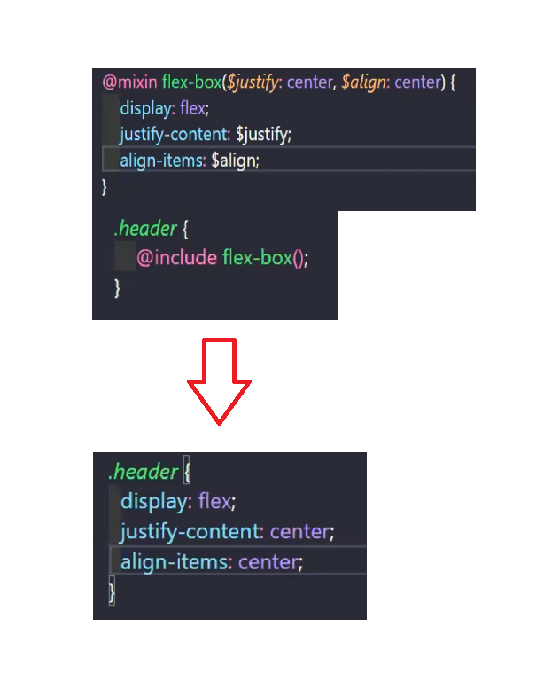
This is another interesting aplication of this tool
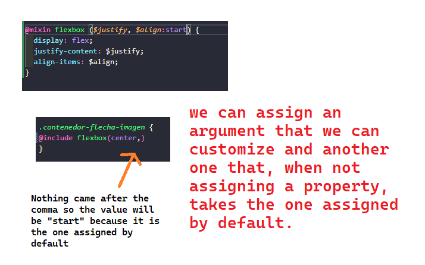
Media Queries with Mixins
We can use this property for more than one element calling them by their class in the SCSS. We just have to do what is told in the next image:
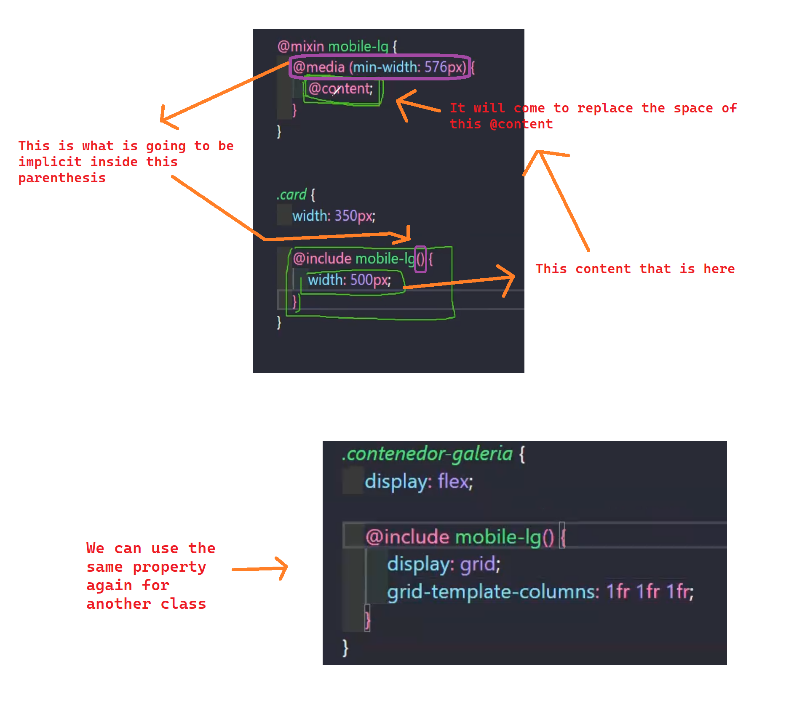
This tool is excellent if we have a sheet with all the media query mixins that we want to apply in a new project and then copy and paste them to save a lot of work.
Conditional if
The "if" statement in Sass allows you to create more dynamic and flexible styles by providing a way to apply different styles based on different conditions. For example, you can use the "if" statement to apply different font sizes or colors depending on the value of a variable, or to apply styles only if certain conditions are met, such as the presence of a certain class or attribute. The "if" statement can help you write more efficient and maintainable code, making it a powerful tool in your Sass toolbox. The "else if" conditional in Sass allows you to chain multiple conditional statements together, each with its own condition and set of styles. The "else" conditional in Sass allows you to define a fallback style to apply when the condition in an "if" or an "else if" statement is false.
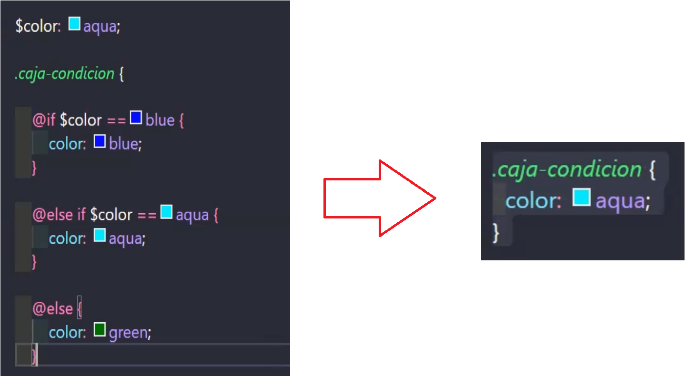
In this conditional, we will use a Sass built-in function called 'lightness'. This function evaluates the luminosity of a color. Take a look at what happens in this example to understand its functionality.
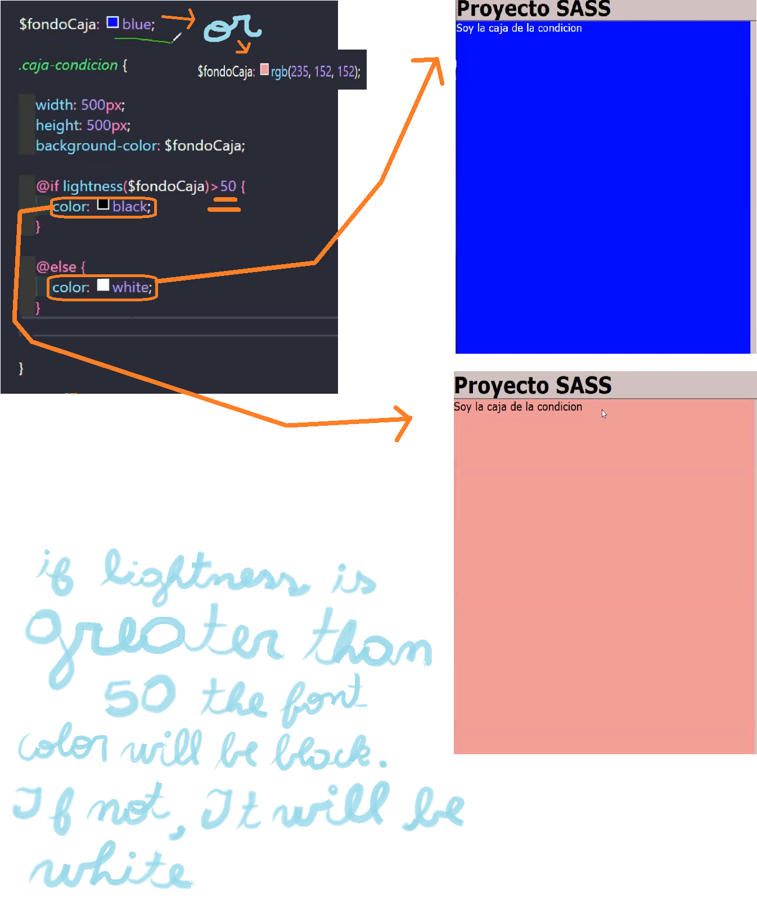
Combining mixins with the conditional that uses lightness
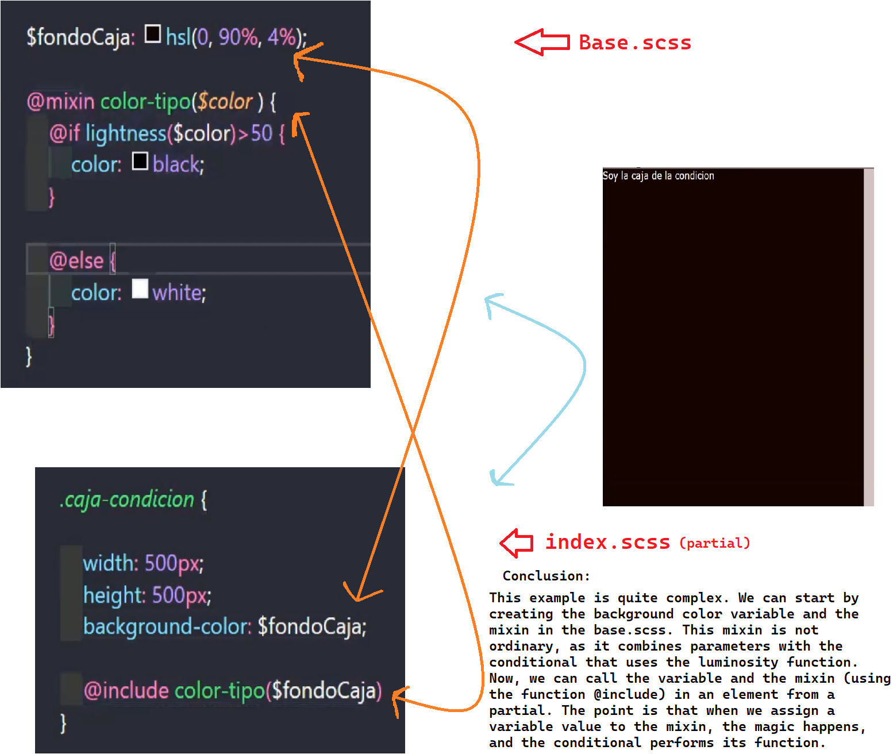
Maps
With this tool we can store multiple values inside a variable. These secondary variables that we store inside the main one will always have a key and a value, a key and a value, and so on. We can do this with typography, colors, numerical values, for shadows, different values for different breakpoints, etc. Pay atention to the caller inside de declaration map-get($example-main, "example-econdary");
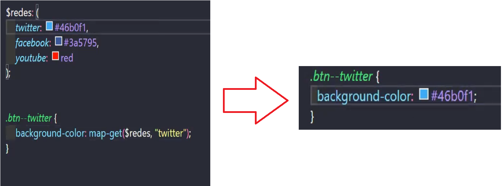
Each
Basically, the function "Each" is a loop where there is a variable that will take values from a list and based on that, it will print different elements. In this case, this tool uses the $var variable. We must keep in mind that it only works inside the "each" loop. Bootstrap uses this functionalities
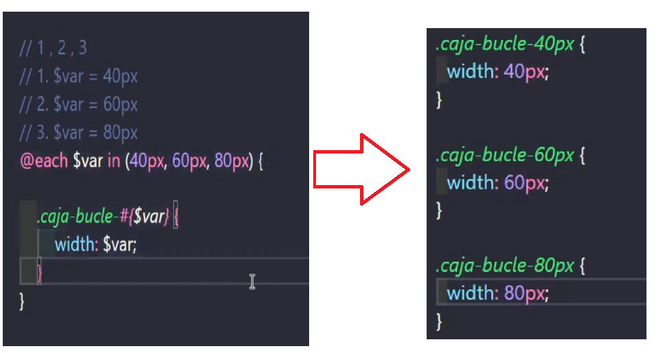
In the following example, we have a loop that, instead of iterating based on a list that we wrote, it will iterate based on a Map. Also, we have to keep in mind that in the previous example, we had only declared one variable after the @each command, which was $var. Now we will declare two variables: $clave and $valor. The first variable called $clave will take the keys in order (twitter, facebook, youtube), while the $valor variable will also take the keys in order, but from the values (light blue, blue, red). The number of times it will iterate will be based on the number of variables in the map. If there are 3, it will iterate 3 times. If there are 4, it will iterate 4 times. Basically, we create a loop that will print classes based on the number of variables assigned in the map and generate them for specific elements (in this case, buttons).